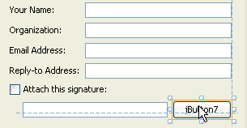
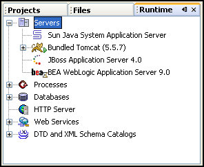
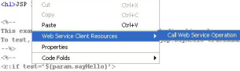
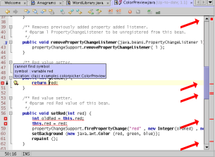
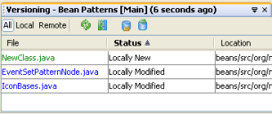
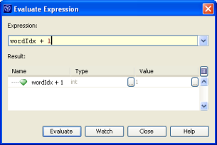

L'EDI NetBeans 5.0 introduit un support facile à appréhender pour le développement de modules pour l'EDI, mais aussi pour le développement d'applications riches basées sur la plateforme NetBeans, le nouveau éditeur visuel intuitif, Matisse, un support CVS entièrement repensé, le support pour WebLogic9 et JBoss4, et tout un tas d'améliorations au niveau de l'éditeur.
Voici un aperçu des quelques fonctionnalités introduites dans cette release:
L'EDI NetBeans offre un support facile à appréhender pour la conception de modules pour l'EDI, ainsi que d'applications riches basées sur la plateforme NetBeans. De nombreux support pour l'extension de l'EDI mais aussi pour la création d'applications basées sur la plateforme NetBeans sont fournis. En utilisant les nouveaux modèles de Branding dans les assistants New Project et New File, vous pouvez générer tous les fichiers et code dont vous avez besoin. La boite de dialogue, Project Properties vous permet de configurer les dépendances au niveau des API, des entrées MANIFEST.MF, et d'autres méta-données concernant le projet. La completion e code et d'autres supports standards, fournit par l'Éditeur de Source sont également disponibles pour les modules.
|

Matisse étend l'Editeur Visuel actuel de l'EDI NetBeans 4.1 pour fournir un simple et intuitif layout, sans avoir à comprendre la complexité des gestionnaires de layouts de Swing. Lorsque vous déposer des composants dans un Form, l'EDI suggère automatiquement les contraintes d'allignement, d'espae, et de redimensionnage. Contrairement au GridBagLayout, la position est déterminée par le look and feel de l'application sur laquelle s'exécute l'application. Redimensionnez-là, traduisez-là, exécutez-là sur une plateforme différente. Votre GUI aura toujours l'air parfait. Allez voir la démo flash Matisse . |
|

Tout comme dans la version précédente, le serveur d'application Sun Java System Application Server 8.1 est supporté, mais ce n'est pas tout -- vous pouvez maintenant enregistrer JBoss 4 et WebLogic 9 dans l'EDI. Lorsque vous faites cela, vous pouvez déployer vos applications web vers ces serveurs, juste comme si vous le déployiez sur le Sun Java System Application Server. En tête de cela, le support pour le Server Web Tomcat a été amélioré -- il est maintenant encore plus facile de travaille avec ce serveur. Par exemple, vous pouvez configurer les options de la JVM de Tomcat directement dans l'EDI. |
|
 La consommation de Web service a été améliorée pour que vous puissez maintenant créer des clients web services également dans vos applications J2SE. Toutes les bibliothèques nécéssaires pour créer et déployer un client web service sont livrés avec l'EDI, pour que le client web service, créé dans une application J2SE puisse être déployé sans problème. Également, dans les applications web, vous pouvez maintenant appeler des opérations d'un web service directement depuis une page JSP. Vous n'avez même plus besoin de créer une servlet. Pour terminer, un nouvel assistant, a été rajouté -- vous pouvez maintenant créer un fichier WSDL directement dans l'EDI et l'utiliser pour générer vos fichiers de service web. |
La completion de code de l'Éditeur est maintenant plus rapide et a été amélioré pour vous offrir plus de choix pour la completion de code. En plus des classes, méthodes, et champs, vous pouvez générer les extraits de code suivant à travers la boîte de completion de code:
NetBeans 5.0 a élargi le nombre d'action de refactoring disponible. Parmis les nouveaux refactoring inclus :
|

Ce qui sont sont quelques améliorations générales au niveau de l'édition. Voir les sections ci-dessus pour des informations quant aux améliorations pour la completion de code et les nouvelles opérations de refactoring.
|
|

Le support CVS a été totalement retravaillé pour s'intégrer dans votre work-flow. L'EDI reconnait automatiquement les répertoires de travailles CVS et reprend une liste de tous les fichiers modifiés dans la fenêtre Versioning. Le support de versionning est également intégré avec le système de projets et les actions de refactoring. La mise à jour et le Commit de fichiers sont les activités les plus courantes que vous effectuez avec CVS. Vous povez lancez ces actions depuis les fenêtres principales de navigation de l'EDI (Projects, Files, et Favorites) ou depuis la fenêtre Versioning. Un système de Badges et de code de couleurs indique le statut actuel des fichiers, dossiers, packages, et projets. Avec la commande Diff, vous pouvez rapidement voir les différences d'un seul fichier, ou un d'un package, dossier, ou projet complet. Le nouveau support CVS simplifie également le partage des méta-données de votre projet, ce qui vous permet de non seulement partager vos sources, mais aussi les paramètres de votre EDI. Voir une démo flash du nouveau support CVS. |
|

Le débogage a été amélioré pour mieux s'intégrer dans l'Éditeur de Source. Vous pouvez maintenant activer et désactiver des points d'arrêts dans l'Éditeur de Soruce même, et accéder aux propriétés des points d'arrêt depuis les annotations de l'Éditeur. La fenêtre Variable a également été améliorée pour afficher plus facilement de grands tableaux. La boîte de dialogue Evaluate Expression vous permet d'évaluer toute expression à la volée. Et vous pouvez maintenant exécuter n'importe quelle méthode dans l'Éditeur de Source. Il y a également un débogueur Ant que vous pouvez utiliser pour avancer pas à pas à travers les appels de target, et examiner les status des propriétés durant l'exécution du script. La fenêtre de tests JUnit affiche maintenant les résultats sous forme d'arborescence. Vous pouvez maintenant utliser la completion de code dans les boîtes de dialogue New Watch et Breakpoint Customizer. |
{kind=link}
{kind=link}
{kind=link}